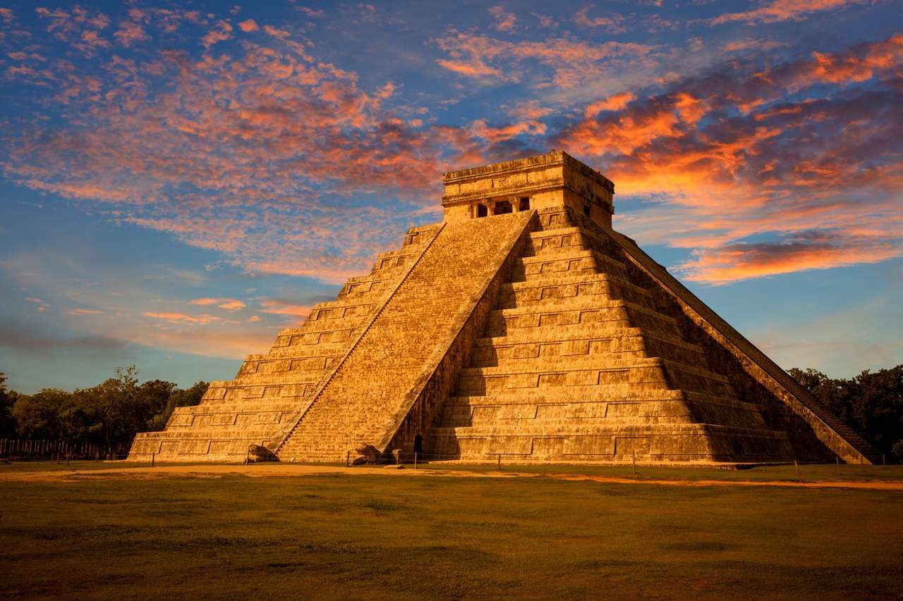
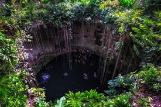

Atracciones Turísticas
Pirámide de Kukulkán
Una de las Siete Maravillas del Mundo Moderno, símbolo central de Chichén Itzá.
Observatorio "El Caracol"
Antigua estructura que los mayas usaban para observar los astros.

Cenote Sagrado
Un pozo natural de gran importancia ritual donde los mayas realizaban ofrendas.
